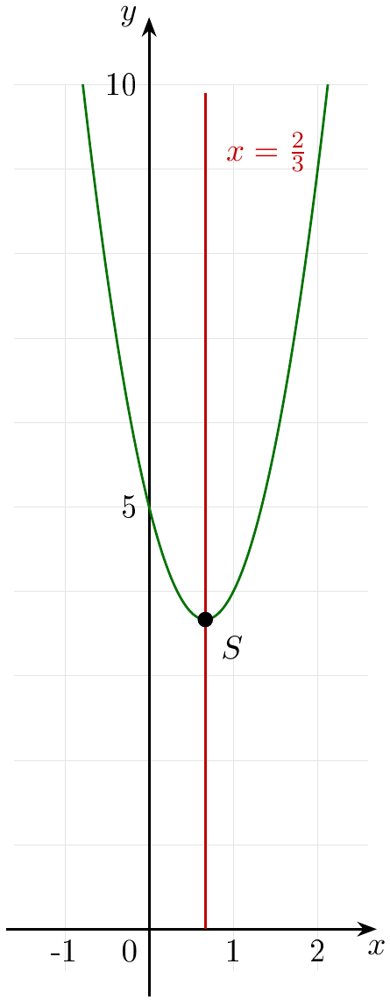
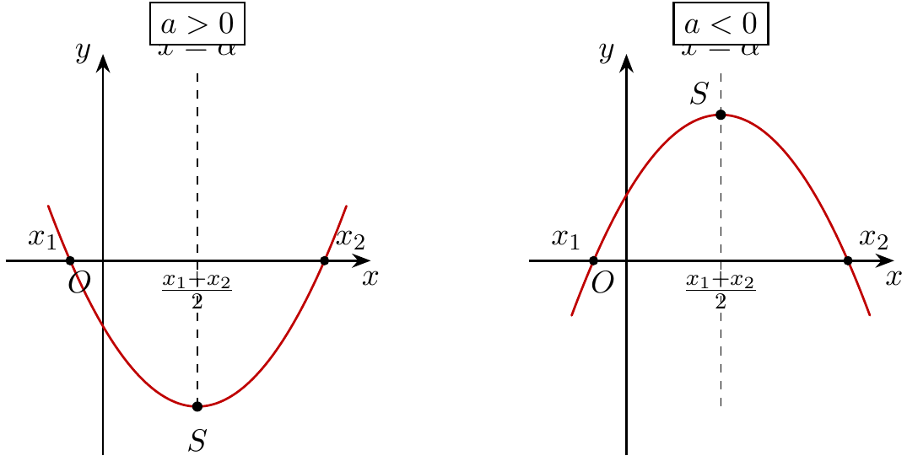
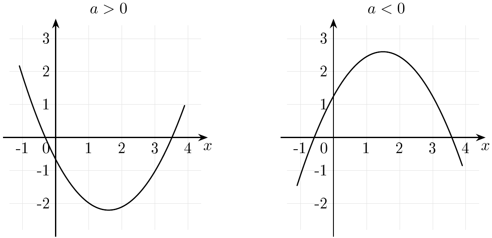
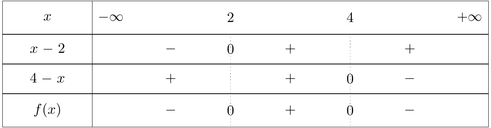

Chapitre IV : Le second degré
Première STMG · Chapitre 4 — Le second degré · cours de Frederik de Peyrelongue
I. Le second degré
On appelle polynôme du second degré toute fonction définie sur $\R$ par
avec $a$, $b$ et $c$ trois paramètres réels et $a$ non nul.
Lorsque $f$ est donnée sous la forme $f(x)=ax^{2}+bx+c$, on dit que $f$ est donnée sous la forme développée.
$f(x)=3x^{2}-5x+2$ est un polynôme du second degré.
II. Forme canonique
Toute fonction du $2^{\text{nd}}$ degré peut s'écrire sous la forme canonique :
En posant
la forme canonique s'écrit :
Pour calculer alpha, il suffit de calculer $-\dfrac{b}{2a}$ ; et pour calculer $\beta$, on calcule $f(\alpha)$.
$f(x)=3x^{2}-4x+5$ : ici $a=3$, $b=-4$ et $c=5$.
Finalement,
III. Représentation graphique
La courbe de la fonction polynôme est une parabole qui admet pour axe de symétrie la droite $D : x=-\dfrac{b}{2a}$ et pour sommet le point $S(\alpha\,;\beta)$ avec

La parabole est orientée vers le haut lorsque « $a$ » est positif, et vers le bas lorsque « $a$ » est négatif.

pour tracer la parabole, on calcule $\alpha=-\dfrac{b}{2a}$ et $\beta=f(\alpha)$, puis on trace l'axe de symétrie vertical $D : x=-\dfrac{b}{2a}$ ; on place le sommet $S$, on place deux ou trois points d'un côté de l'axe de symétrie, on place les autres par symétrie et on trace la courbe.
IV. Étude de la fonction polynôme du second degré
Soit $f(x)=ax^{2}+bx+c$ avec $a\neq 0$.
Si $a>0$, alors $f$ est décroissante sur $\left]-\infty\,;-\dfrac{b}{2a}\right]$ et croissante sur $\left[-\dfrac{b}{2a}\,;+\infty\right[$.
Si $a<0$, alors $f$ est croissante sur $\left]-\infty\,;-\dfrac{b}{2a}\right]$ et décroissante sur $\left[-\dfrac{b}{2a}\,;+\infty\right[$.

Donner le tableau de variation de la fonction $f(x)=-4x^{2}+24x+7$.
V. Forme factorisée
On appelle racine d'un polynôme $P$ toute valeur « $r$ » telle que $P(r)=0$.
$f(x)=3x^{2}-2x-1$ : on a $f(1)=0$, donc $1$ est une racine de $f$.
Fonctions polynômes du second degré sous forme factorisée
Toute fonction $f$ définie sur $\R$ par
où $a$, $u$ et $v$ sont des paramètres réels et $a$ est non nul, est une fonction polynôme du second degré. On dit que $f$ est donnée sous la forme factorisée.
On a ici $a=a$, $b=a(u+v)$ et $c=auv$.
Avantage de la forme factorisée
Soit $f$ une fonction polynôme du second degré, donnée sous la forme factorisée (ce n'est pas toujours possible)
où $a$, $x_{1}$ et $x_{2}$ sont des paramètres réels et $a$ est non nul.
1. Résoudre l'équation $f(x)=0$.
Cela revient à résoudre $a(x-x_{1})(x-x_{2})=0$.
On peut utiliser le théorème : un produit de facteurs est nul si, et seulement si, au moins l'un de ses facteurs est nul.
Ainsi,
$f(x)=0$ a pour solution
Exemple : $5(x-2)(x+3)=0$, alors $S=\{2\,;-3\}$.
2. Étudier le signe de $f(x)$.
Pour étudier le signe de $f(x)$, on dresse un tableau de signes où l'on place chacun des facteurs.
Exemple : $f(x)=5(x-2)(4-x)$.

Conclusion : $f(x)\geqslant 0$ sur l'intervalle $[2\,;4]$ et $f(x)<0$ sur $\left]-\infty\,;2\right[\cup\left]4\,;+\infty\right[$.
3. Propriété : si $f(x)=a(x-x_{1})(x-x_{2})$, alors
C'est évident : l'axe de symétrie se trouve au milieu des racines.
Exemple : $f(x)=5(x-2)(x+8)$, alors $x_{1}=2$ et $x_{2}=-8$, donc $\alpha=-3$.
Obtenir une forme factorisée
Exemple : soit $P(x)=a(x-u)(x-v)$ ; alors $P(u)=0$ et $P(v)=0$ : $u$ et $v$ sont donc des racines de $P$.
Exemple : $P(x)=x^{2}-2x+1$ ; $P(1)=1-2+1=0$, donc $1$ est une racine de $P$.
Soit $P$ un polynôme et soit $u$ une racine de $P$ : alors $P(u)=0$ et on peut mettre $(x-u)$ en facteur.
Exemple : $P(x)=x^{2}+6x-7$ ; $P(1)=1+6-7=0$ : $1$ est une racine, on peut donc mettre $(x-1)$ en facteur.
il faudra identifier la valeur de $k$.
On développe :
Par identification, on a $k=-7$ et $1-k=6$, d'où $k=-7$.
Et
Propriété
Soit $f$ une fonction du second degré ayant deux racines $x_{1}$ et $x_{2}$, alors
Soit $f(x)=5(x-2)(x+5)$.
- Trouver les deux racines de $f$.
- Calculer $\alpha$.